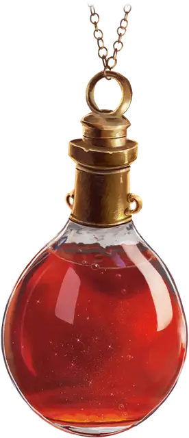

Зелье лечения
Potion of Healing
Зелье, редкость варьируется (Обычное, Необычное, Редкое, Очень редкое)

Выпивая это зелье, вы восстанавливаете Хиты. Количество восстанавливаемых Хитов зависит от редкости зелья, как показано в таблице ниже.
Какой бы редкости ни было Зелье лечения, оно представляет собой красную жидкость, мерцающую при встряхивании.
| Зелье | Восстанавливаемые Хиты | Редкость |
| Зелье лечения | 2к4 + 2 | Обычное |
| Зелье большого лечения | 4к4 + 4 | Необычное |
| Зелье отличного лечения | 8к4 + 8 | Редкое |
| Зелье превосходное лечения | 10к4 + 20 | Очень редкое |